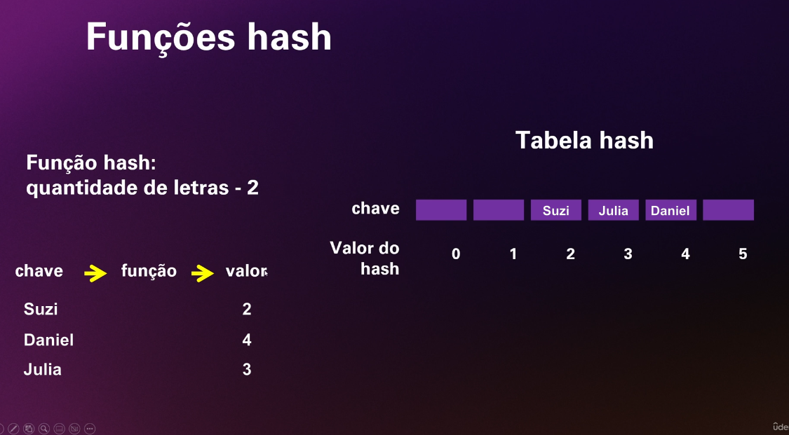

Os dicionários, também conhecidos como mapas, são estruturas de dados que procuram resolver um problema, que é buscar um elemento de forma eficiente, em um grande conjunto de dados.
Consiste em guardar e manipular (adicionar, encontrar e remover) elementos usando o par 'chave/valor'. A chave deve ser sempre única.
De forma bem simplificada, um objeto em Javascript é parecido com um mapa.
Em muitas linguagens de programação os mapas são implementados internamente usando tabelas hash.
Uma tabela hash é uma estrutura de dados que implementa um dicionário usando uma função hash (ou função de espalhamento) para converter chaves em índices de um array. O foco está na performance e eficiência na busca, adição e remoção.
